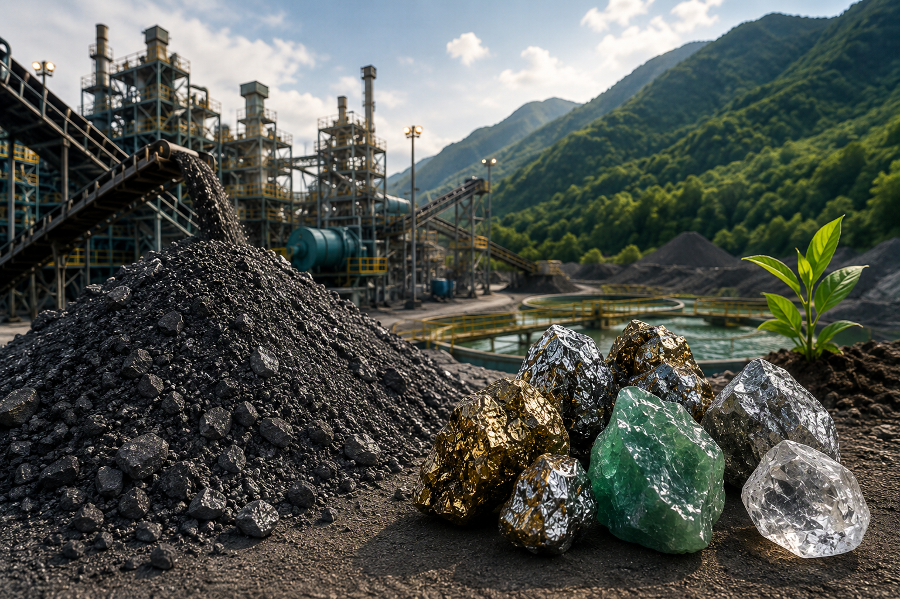
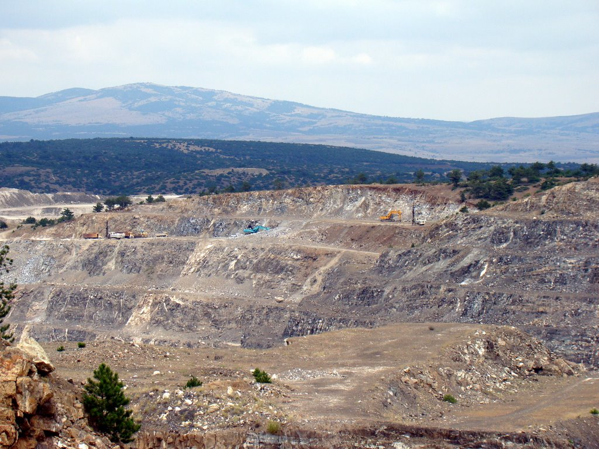
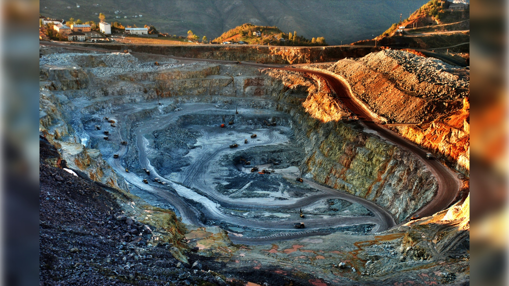

EMT Erdoğan Maden Teknolojileri
Maden Mühendisliği • Cevher Zenginleşirme • Madencilik Ekipmanları • Endüstriyel Mineraller
Bize UlaşınMaden Mühendisliği • Cevher Zenginleşirme • Madencilik Ekipmanları • Endüstriyel Mineraller
Bize UlaşınMaden işletmeciliği, cevher zenginleştirme ve mineral proses teknolojileri alanlarında mühendislik, proje geliştirme ve ticari çözüm hizmetleri sunan bir mühendislik ve danışmanlık şirketidir.
Özellikle enerji verimliliği yüksek mikrodalga kurutma ve termal işlem teknolojileri üzerine yürüttüğümüz çalışmalar, mineral işleme süreçlerinde daha kontrollü, sürdürülebilir ve yenilikçi uygulamaların geliştirilmesini hedeflemektedir.
Flotasyon, sallantılı masa, jig ve ağır ortam ayırma gibi yöntemlerle, cevher zenginleştirme tesisleri atıklarında bulunan değerli minerallerin geri kazanımına yönelik çalışmalar yürütmekteyiz. Ayrıştırma işlemleri sonrasında geride kalan kil ve ince fraksiyonlar ise yeniden değerlendirilerek seramik ve refrakter sektörleri için ikincil hammadde haline getirilmektedir.
Madencilik sanayisine yönelik ekipman, makine ve sarf malzeme tedariki de gerçekleştirmekteyiz. Öğütme bilyaları, öğütme çubukları ve proses ekipmanları gibi birçok endüstriyel ürün grubunda güvenilir çözüm ortağı olarak hizmet vermekteyiz.
Manyezit, dolomit, bentonit ve kuvars kumu başta olmak üzere farklı mineral gruplarında teknik bilgi ve saha deneyimini proses mühendisliği ile birleştirerek sektöre özel çözümler geliştirmekteyiz.
Her projeye saha tecrübesi, akademik bilgi birikimi ve uygulama mühendisliğini bir araya getirerek; teknik doğruluk, ekonomik uygulanabilirlik ve sürdürülebilirlik perspektifiyle yaklaşmaktayız.
Madencilik ve mineral teknolojileri alanında yenilikçi, güvenilir ve uygulanabilir çözümler geliştirerek sektörümüze katma değer sağlamaktır.
Maden Arama, Fizibilite ve Etüt Çalışmaları
Açık ve Yeraltı Maden İşletme Projeleri
Dönem Faaliyet Raporları
Cevher Zenginleştirme Projeleri
Tesis Verimlilik ve Performans Analizleri
Tesis Atıklarından Değerli Minerallerin Geri Kazanımı
Kuvars kumu, bentonit ve MgSO4 gibi endüstriyel mineraller, killer ve tuzların kurutulması çalışmaları
Kavurma yöntemiyle grafit gibi cevherlerin saflaştırılması çalışmaları
Hematit ve kömür gibi cevherlerdeki kükürt giderimi çalışmaları
Manyezit ve kalsit gibi cevherlerin kalsinasyonu çalışmaları
Manyetit, hematit ve antimonit gibi cevherlerin redüksiyonu (indirgenmesi) çalışmaları
Bilgisayar programları ile maden işletme projesinin yönetilmesi

Açık ocak maden planlaması

Yüksek fırın baca tozu Pb-Zn arıtma projesi

EMA (Excel-Makro-AutoCAD) yöntemiyle hazırlanan açık ocak kömür işletme projesi


EMA (Excel-Makro-AutoCAD) yöntemiyle hazırlanan yeraltı kömür işletme projesi


Pozantı zeytin karasu arıtma projesi


Maden şlamı arıtma projesi


SGS kömür ayıklama projesi

Winnowing kömür ayıklama projesi

Kümaş rezistans ısıtıcı kumu üretimi projesi

Çolakoğlu magnezyum sülfat üretimi projesi

Özmaltaş magnezyum sülfat üretimi projesi

Kuvars kumu kurutma projesi


Antimon metal üretimi projesi

Kristal magnezyum sülfat kurutma projesi
Bentonit kili kurutma projesi
Bor kili kurutma ve kavurma projesi
Manyetit cevher peletlerini kurutma ve kavurma projesi
Termik santrallar için kömür cevheri kurutma ve gevretme projesi
Grafit cevheri kurutma ve kavurma projesi
Altın cevheri kuvars çatlatma projesi
KROMİT Tesis Atıklarından Değerli Mineral Geri Kazanımı

MANYEZİT Tesis Atıklarından Değerli Mineral Geri Kazanımı

KURŞUN ÇİNKO Çinko Tesis Atıklarından Değerli Mineral Geri Kazanımı

BAKIR Tesis Atıklarından Değerli Mineral Geri Kazanımı

Mikrodalga Tünel Kurutma Sistemleri
Kullanım Alanları: Endüstriyel mineraller, bentonit killer, kuvars kumu, cevher peletleri, beton karo ve seramiklerin kurutulması
Fırın Bant Boyutları; Eni: 80cm, 100cm, 125cm, Boyu: 8m, 10m, 15m, 20m


Dövme Çelik Öğütme Bilyaları
Kullanım alanları: Altın, bakır, kurşun-çinko, kromit, manyezit, feldspat, kuvars, demir, çimento ve diğer endüstriyel minerallerin öğütülmesi
Bilya çapları: 25mm, 30mm, 40mm, 50mm, 60mm, 70mm, 80mm, 90mm, 100mm


Kırılmış Elenmiş Pomza Cevheri
Kullanım Alanları: Sıva kumu, blok tuğla üretimi, peyzaj düzenlemeleri, tarım sektörü (ağaç kök bölgesinde su rezervuarı oluşturma), tekstik sektörü (kumaş taşlama)
Cevher Boyutları; Sıva Kumu: 0-4mm, Briket: 0-16mm, 8-16mm, Peyzaj: 16-32mm, Tarım: 4-8mm, 8-16mm


Ham Manyezit Cevheri
Kullanım Alanları: Kalsine manyezit hayvan yemi üretimi, magnezyum sülfat sanayi tuzu üretimi
Cevher Özellikleri:
Cevher Boyutları:

Marka: EMT MADEN
Şirket: EMT Erdoğan Maden Teknolojileri
Web: www.ermintech.com
E-posta: info@ermintech.com
WhatsApp: +90 533 317 29 44
Lokasyon: İnönü Mah., 183/2 Sokak, No:2, 35870 İzmir